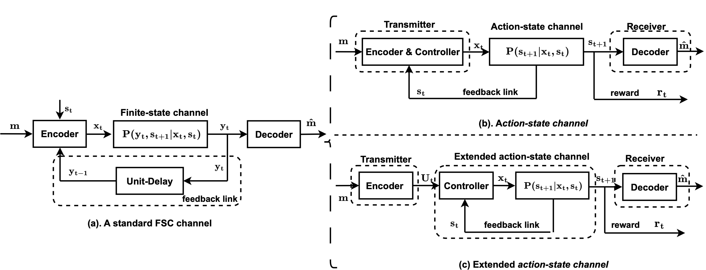

From a standard FSC to an action-state channel and its extension

The impact of communication on decision-making systems has been extensively studied under the assumption of dedicated communication channels. We instead consider communicating through actions, where the message is embedded into the actions of an agent which interacts with the environment in a Markov decision process (MDP) framework. We conceptualize the MDP environment as a finite-state channel (FSC), where the actions of the agent serve as the channel input, while the states of the MDP observed by another agent (i.e., receiver) serve as the channel output. Here, we consider the agent communicates through its actions, while at the same time, trying to maximize its reward. We first characterize the optimal information theoretic trade-off between the average reward and the rate of reliable communication in the infinite-horizon regime. Then, we propose a practical framework to design a joint control/coding policy, termed Act2Comm, which seamlessly embeds messages into actions. From a communication perspective, Act2Comm functions as a learning-based channel coding scheme for non-differentiable FSCs under input-output constraints. From a control standpoint, Act2Comm learns an MDP policy that incorporates communication capabilities, though at the cost of some control performance. Overall, Act2Comm effectively balances the dual objectives of control and communication in this environment. Experimental results validate Act2Comm's capability to enable reliable communication while maintaining a certain level of control performance.
A controlled random walk example, where the agent is seeking to maximize the reward with some randomness in control.
Act2Comm is agnostic to message modality, communicate bits to any receiver who can observe the states.
The "Erratic Robot" example, where the robot is seeking to maximize the reward with some randomness in the control.
Act2Comm can communicate bits to any receiver who can observe the states.
The capacity of the action-state channel without reward constraint is given by:
where \( X, S \), and \( S^+ \) follow a joint distribution given by:
The capacity of the action-state channel with reward constraint \(V\) is the optimal value of the following convex optimization problem:
where \(I(w,{T})\) is a concave function of \(w \in \mathcal{W}\) defined as:
Fig. 1 Control-communication trade-off of Act2Comm in “Lucky Wheel”.
Fig. 2 Control-communication trade-off of Act2Comm in “Catch the Ball” with p=0.
Fig. 3 Control-communication trade-off of Act2Comm in “Catch the Ball” with p=0.2.
Fig. 4 Control-communication trade-off of Act2Comm in “Erratic Robot” with p=0.2.
@article{Act2Comm,
title={Actions Speak Louder Than Words: Rate-Reward Trade-off in Markov Decision Processes},
author={To be given},
journal={Open review},
year={2025}
}